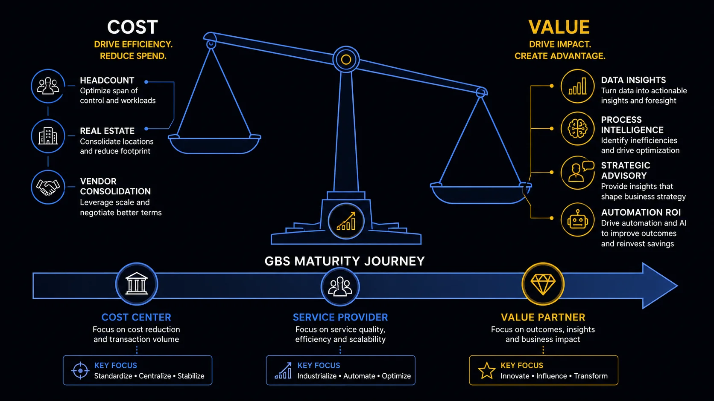

Value Creation and Commercial Logic GBS delivers more than cost reduction. Most of it goes uncredited.
Cost reduction gets the business case approved. Everything else is what makes GBS genuinely strategic — and almost none of it appears in a P&L line.
The full value picture
The 41% figure is not evidence that GBS fails to create value. It is evidence that GBS fails to capture and communicate the value it creates.
Technology vendors, software providers, and professional services firms price differently when negotiating with ten country entities versus one central team.
- Volume leverage reduces unit cost before a single process is touched
- ERP licenses, audit fees, banking fees — all compress at scale
- Savings are real but rarely traced back to the GBS team that created them
APAccounts Payable — the process of managing, validating, and paying supplier invoices centralization almost always surfaces duplicate payments — some dating back years before the transition.
- Recoverable amounts are rarely trivial
- Pre-transition duplicates surface during AP normalization
- Requires systematic matching logic — a natural GBS process control
Standardized processes and documented controls reduce the risk of missed deadlines, late filings, and regulatory breaches.
- The cost of a penalty never incurred does not appear in any savings report
- Transfer pricing consistency improves when one team owns the process
- Statutory deadlines managed centrally have lower miss rates
External auditors work faster and at lower cost when processes are documented, consistent, and operated by a single team with clear controls.
- Audit preparation time drops significantly post-centralization
- Control deficiencies reduce — one team, one standard, one audit trail
- Balance sheets and P&L are cleaner when postings follow standardized rules
Cost levers — headcount, real estate, vendor consolidation
When ten country teams run the same process differently across different system configurations, an ERPEnterprise Resource Planning — integrated platform managing finance, HR, procurement, and supply chain across the organization upgrade is a multi-year program.
- One GBS running a standardized process means a controlled rollout
- Testing scope, data migration, and training all compress significantly
- The upgrade cost difference between fragmented and centralized delivery is substantial — and almost never attributed to GBS
Vendor records, customer data, cost centers, material codes. When scattered across entities, nobody owns them. When centralized, governance becomes possible.
- Data ownership fragmentation is the norm — procurement, finance, and operations each own part of a vendor record, none own all of it
- Centralization does not automatically fix MDM — but it makes fixing it possible
- The downstream value: fewer errors, faster processing, more reliable reporting
Before centralization, process knowledge lives in individuals. It is siloed, fragmented, undocumented, and outdated.
- A functioning GBS makes knowledge explicit, transferable, and auditable
- When someone leaves a fragmented operation, the process often leaves with them
- Documented SOPsStandard Operating Procedures — written documentation of how a process should be executed, including steps, inputs, and expected outputs and DTPsDesktop Training Procedures — step-by-step task-level documentation, more granular than an SOP are institutional resilience — the value is invisible until you need them
When the GBS produces consistent, timely, and accurate data, leadership makes better decisions. That causal link is real — and almost impossible to attribute.
- Consolidated reporting replaces fragmented country spreadsheets
- Insights shared with business leaders are only possible when someone owns the data
- 52% of organizations are already moving GBS toward decision support and business partnering (SSON, 2026)
A well-run GBS is one of the best sources of future finance and operations leaders. Associates who rotate through multiple processes, geographies, and functions build breadth that is rare in functional silos.
- Cross-functional exposure at scale is a GBS structural advantage — not available in country-level roles
- Organizations that treat GBS as a leadership development engine see measurable retention and promotion rates above average
- This pipeline value never appears in the business case. It should.
Value drivers — insights, process intelligence, advisory, automation
Only 41% of companies believe their shared services create tangible value (BCG, 2024). That is not because the value does not exist. It is because most of it never gets traced back to a P&L line. The GBS does not get credit for the audit that went smoothly, the ERP upgrade that stayed on schedule, or the duplicate payment recovered three years after transition. It gets measured on cost per FTEFull-Time Equivalent — unit measuring workforce capacity. 1.0 FTE equals one full-time employee working standard hours. and SLAService Level Agreement — contractual performance standard defining response time, accuracy, and availability. attainment — then asked why it is not a strategic partner.
Data monetization in GBS is discussed more than it is practiced. The structural reason: most business data has no single owner.
- A vendor master record is needed by procurement (sourcing), finance (payment fields), and the business (product delivery context). Each party owns part of it. Nobody owns all of it.
- The same fragmentation applies to customer records, product data, and fixed assets — each touched by multiple functions with different data needs.
- Until master data ownership is resolved, monetization remains theoretical.
- The practical value of good data in GBS is not in selling it — it is in making it accurate, consistent, and usable for the business that already owns it. That is where the real return is.

From Cost Center to Value Partner — the GBS maturity journey
TCOTotal Cost of Ownership — the full cost of delivering a service, including direct and indirect costs, not just visible headcount. and Cost-to-Serve — how costs are actually measured
Most GBS business cases compare total cost before centralization to total cost after. That is TCO done correctly. The discipline is in what you include.
A TCO comparison that only captures the visible costs will overstate the business case. The missed items above typically add 15–25% to the real cost on both sides of the comparison.
Source: Gartner, Five Shared Services Pricing Approaches. Neither model is universally correct — the right choice depends on organizational maturity and what behavior the business wants to incentivize.
The CFO conversation — what actually lands
Two numbers. A CFO will respond to both. The discipline is in building them honestly.
How long until the total investment pays for itself. The primary decision gate for most GBS programs.
One client analysis found the payback period for building a captive center was more than double that of outsourcing — over four years versus under two (Auxis/Deloitte, 2024). The model choice affects the payback math significantly.
A CFO approving a multi-year transition wants to know when the organization crosses into positive cash territory — not the theoretical run-rate saving in year five.
Total value generated divided by total investment. The credibility test is what you count as value.
Run-rate savings are projections. P&L-realized savings are what finance will accept. The gap between the two is where most business cases lose CFO confidence.
A business case built entirely on soft savings will not survive scrutiny. One that ignores soft savings undervalues the program significantly. The skill is knowing which category each benefit belongs in — and being honest with the numbers.
- Headcount reduction and redeployment
- Contract and license consolidation
- System decommissioning
- Duplicate payment recovery
- Facility and infrastructure cost reduction
- Capacity release (same headcount, more output)
- Avoided penalties and compliance costs
- Audit cost reduction
- Error rate reduction and rework avoidance
- Faster ERP upgrade execution
- Cost reduction is the entry ticket, not the destination. The organizations that extract genuine value from GBS are the ones that measure what the model makes possible — not just what it costs less.
- The value that goes uncaptured is not invisible — it is just not on anyone's reporting template. Audit quality, ERP upgrade speed, data governance — these are measurable with the right tracking discipline.
- The business case conversation with a CFO is won on payback period and realized savings, not on a list of strategic benefits. Build the financial case first. The narrative follows.
- Most GBS organizations are sitting on a talent pipeline story they have never told. Associates who move through multiple processes and geographies become your best future finance and operations leaders. That story is free to tell and almost never told.
The GBS maturity journey — cost center to value partner
What this means for your career
Two things matter more than technical competence in the first two years of a GBS career.
- Most GBS associates know their process well. Far fewer understand the business they are supporting. That gap is the career differentiator.
- Learn what your business unit actually does to generate revenue — what they sell, who they sell it to, what slows them down
- Understand what administrative burden your process creates for the business — approvals required, data requests, exceptions, rework loops
- The less burden you create, the more the business can focus on selling and producing. That connection is the definition of GBS value.
- Ask questions that go beyond your transaction. "Why does this approval exist?" is a career question, not just a process question.
- GBS organizations regularly keep themselves busy with work that has no clear value for anyone — requirements assumed, approval thresholds unchallenged, reports produced because they always have been
- Every approval, every report, every workflow step should have a named beneficiary and a clear purpose
- If you cannot identify who benefits from a process step and how, that is a question worth raising — tactfully, with evidence, not as a complaint
- The business wants less friction, better data, and fewer hurdles — not more controls nobody asked for
- Associates who understand the business well enough to identify what is slowing it down — and have the credibility to suggest change — build careers faster than those who only execute
Knowing what to change is step one. Knowing how to raise it without damaging the relationship is step two. Stakeholder communication and career positioning — how to build credibility, frame improvement ideas, and navigate organizational dynamics — are covered in Pillar 4 (Stakeholder and Communication) and Pillar 5 (Career and Performance).
Key terms in this cluster
Additional terms used in this cluster. Full cross-pillar glossary available at the GBS Insider Club Field Guide.
The GBS maturity journey — cost center to value partner
Want the full breakdown on video?
Value creation, business case metrics, and the CFO conversation — covered in depth on the GBS Insider Club YouTube channel.
▶ Subscribe on YouTubeKnowing the frameworks is the entry ticket. Applying them — visibly, at your actual job — is what gets you promoted.
The GBS Insider Club Career Paths turn this theory into a guided 90-day program for your role: self-assessment, practical exercises, templates, and Julian's unfiltered practitioner playbook.
Explore the Career Paths → Back to GBS Fundamentals